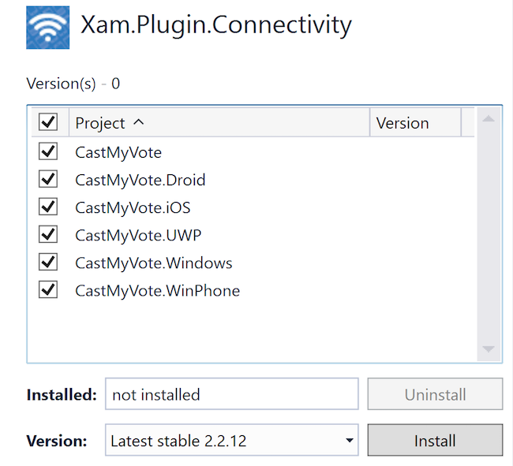

Duration
10 minutes
Goals
In this lab exercise, you will complete your offline caching by providing the code that synchronizes the local DB to the remote DB on Azure.
Assets
There is a completed version of the exercise in the Part 05 Resources folder. You should continue from your current work, or use the completed version in the prior lab folder as a starting point.
Challenge
There are several steps we will take for this lab. You can explore on your own to implement the functionality for your service, or use the step-by-step instructions below.
- Push any changes to the remote DB when the app is launched.
- Pull down the latest questions table when the app is launched.
- Synchronize changes to the responses table each time we change the question or the name.
- Finally, optimize our code by detecting the network state with the Xam.Plugin.Connectivity NuGet package.
Validating the offline synchronization
Since you'll now be working offline, it's helpful to be able to look at what's currently on the server. You can do this by hitting the responses table directly with a REST client such as Postman. The endpoint you want is https://xamu-voter.azurewebsites.net/tables/responses/. Alternatively, you can use the following code in Xamarin Workbooks or paste it into a Console application or some other C# IDE and run it.
// Runs in MacNet45 or WPF
// Needs a reference to Newtonsoft.Json;
// use the File > Add Package menu option in Workbooks
#r "Newtonsoft.Json"
using System.Net;
using Newtonsoft.Json;
using Newtonsoft.Json.Linq;
string AzureUrl = "https://xamu-voter.azurewebsites.net/tables/responses/";
WebClient client = new WebClient();
client.Headers.Add("ZUMO-API-VERSION", "2.0.0");
client.Headers.Add("Content-Type", "application/json");
Console.WriteLine(
JValue.Parse(client.DownloadString(AzureUrl))
.ToString(Formatting.Indented));
Steps
Synchronize the Questions table
Let's start by synchronizing the questions table. We'll do this as part of our initialization logic in our service code.
-
Locate the
InitializeAsyncmethod and use theMobileServiceClient.SyncContextto push changes to the remote DB after we initialize our sync tables. -
After you've pushed changes which may have been made while offline, go ahead and pull all questions down. Since these don't change frequently, we'll just pull them down once as part of our initialization code.
- Since this is part of our initialization code, go ahead and pass in a query name (such as "allQuestions") so we turn on incremental sync.
- You can use a standard full query.
-
Make sure to catch exceptions, for now just dump the exception to the debug console using
Debug.WriteLine. - Run the app and verify that you get questions in the UI now.
Synchronize the response table
Next, we need to write a method to synchronize our response table. Since this table will be changed by our app (and on the server), we will need to synchronize it more often than the questions. Since the app always works with responses only for the current question, we'll use a custom query that only synchronizes for a specific question.
- Add a new method named SynchronizeResponsesAsync that returns a
Taskand takes astringwhich is the questionId we want to retrieve responses for. - Use the
PullAsyncmethod to retrieve just the responses for the passed questionId.- We can turn on incremental sync by supplying a query name, however it needs to be unique for each query - meaning it needs to take into account the questionId. The easiest way to do that is to generate a unique string by appending the questionId itself.
- As with the previous code, make sure to catch exceptions; just output them to the debug console.
-
We will want to perform the response synchronization each time we change a record - so add a call to our new
SynchronizeResponsesAsyncmethod into yourAddOrUpdateSurveyResponseAsyncandDeleteSurveyResponseAsyncmethods after you make the change.
-
We also want to synchronize to the response table when we change the current question or the name - in both cases, this will call our
GetResponseForSurveyAsyncmethod. However, we don't want to refresh against the table every single time since this is called quite often. Instead, let's only refresh if the passed questionId parameter changes.- Create a private field in the class to hold the last known questionId we refreshed our responses for.
- Check the field against the passed questionId parameter. If it's different, then synchronize against the responses table using our method and set the last question id field.
- Run the application and try adding and deleting a few records and compare it to the online version through the Workbook or a REST client.
Work with the application offline
Next, let's force the app offline and see how it responds. Prior to our changes, it would have simply failed. We have several ways we can test no network - if you are on a physical device, you can switch to Airplane mode, on a simulator it's a bit harder. On iOS, you can use the Network Link Conditioner. Alternatively we can take the easy way out and just change the AzureUrl value to be something we cannot resolve.
- Change the AzureUrl constant string to be invalid. For example, change the ".net" suffix to ".zzz" (kind of like it's sleeping!)
- Run the application and make some changes. Check the live server - you should not see your changes.
- Shutdown the app, reset the URL back and run it again. When it launches, verify your changes are still in the app by looking at all responses; it should immediately synchronize back to the server.
Optimize the network code (Optional)
As a last step, let's optimize our network code slightly by checking to see if we have network connectivity before attempting to synchronize to the database.
- Add a NuGet reference to Xam.Plugin.Connectivity to all your projects. 
- Check the
Plugin.Connectivity.CrossConnectivity.Current.IsConnectedproperty before attempting to synchronize to the remote DB. - Run the application to verify that it all still works properly.
- The completed solution has this code in place.
Summary
In this exercise, you added full support for locally caching data using the built-in support and broke your app! We'll fix it next.